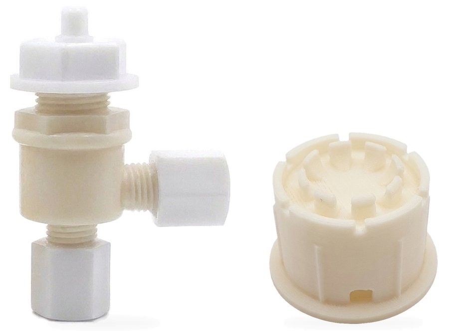
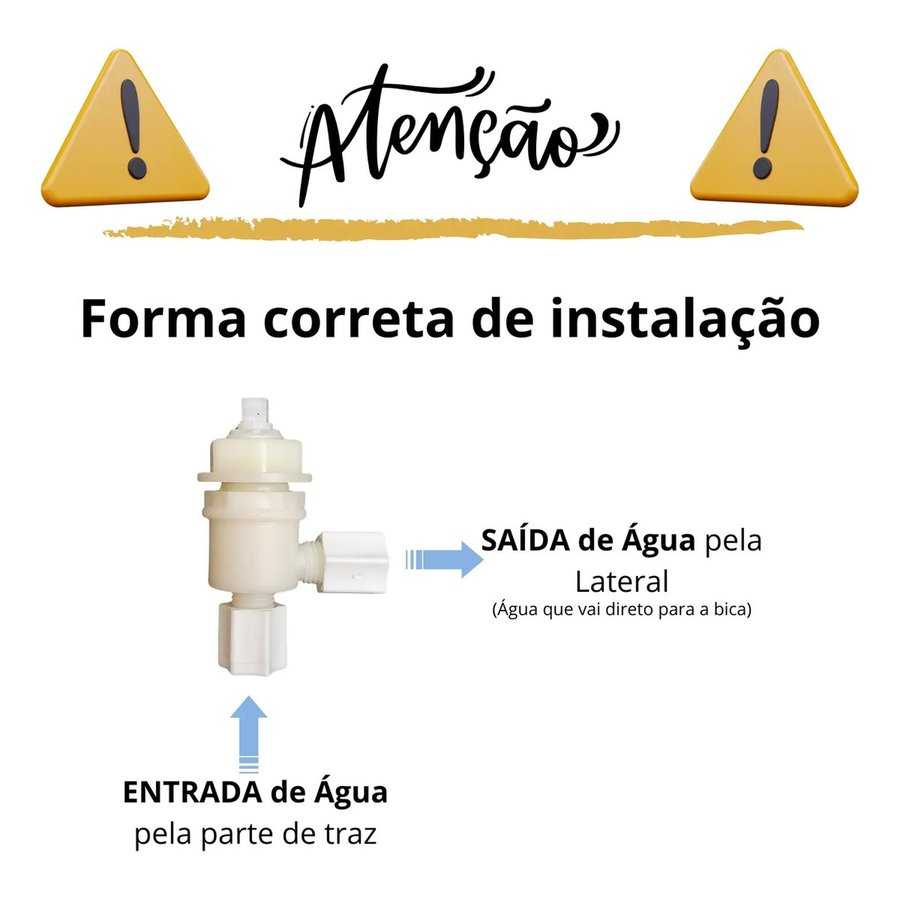

Registro + botão manípulo
Como instalar o registro
O registro de cima dos purificadores IBBL com 2 botões na frente.
O que vem na caixa

1 registro + 1 botão manípulo. A borracha preta e a tampinha cinza não vêm: use as do seu botão antigo.
Passo a passo
- Desligue o purificador da tomada e feche a entrada de água.
- Tire o botão antigo. Guarde a borracha preta e a tampinha cinza.
- Solte as mangueiras e a porca do painel e tire o registro antigo.
- Coloque o registro novo: a água entra por baixo e sai pela lateral, que vai para a bica.
- Aperte a porca, encaixe o botão novo e recoloque a borracha e a tampinha.
- Abra a água e confira se não vaza.
Recomendamos que a troca seja feita por um técnico. O vídeo é uma ilustração das peças.
Atenção ao lado da água

Serve nos purificadores IBBL
- Due Immaginare
- E-due
- E-due Equilibrium
- EVO Immaginare
- Evolux
Só no registro de cima, nos modelos com 2 botões na frente. Não serve no misturador de baixo nem em modelos de alavanca.
Ficou com dúvida?
Chame a gente no WhatsApp que a gente explica.
Falar no WhatsAppCasa dos Bebedouros · Salto/SP · (11) 97557-1555